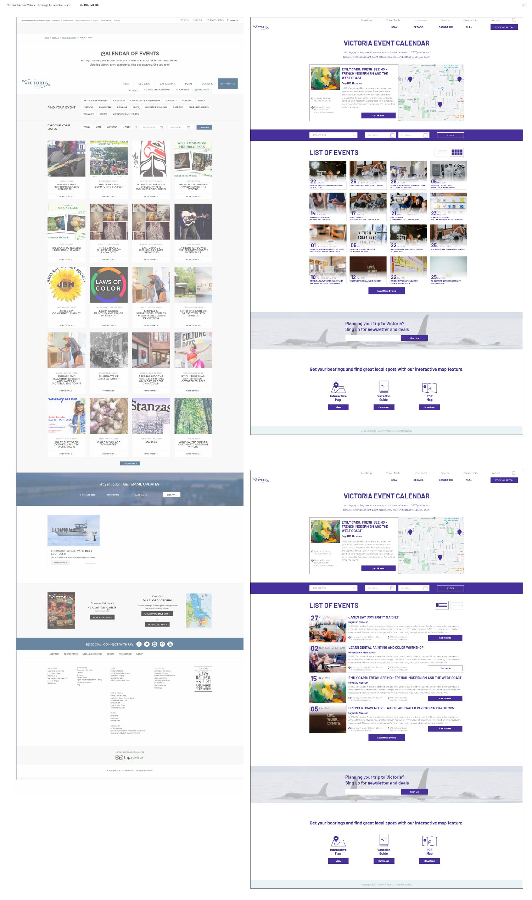
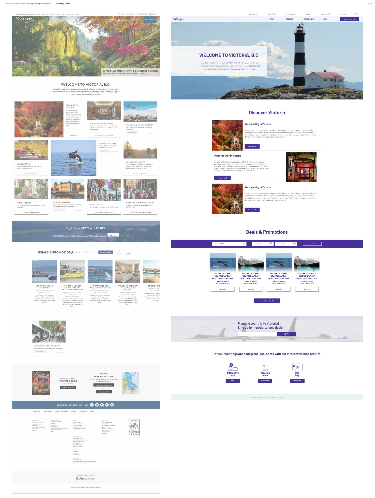

Home Page Comparison: Before and After
Events Page Comparison: Before and After

Victoria Tourism Website
Redesign
This is a redesign of some pages (home page, event calendar and contact us page) of the Victoria Tourism website, browser size and create a new "mini" UI Kit to support standardization of pages.
You access here look the original Victoria Tourism Website.
This was developed as an individual work and this images are part of the documentation produced for the class Advanced Graphic Design, Langara College, Term 3 of 4, 2020.
Please contact me to talk more about this project or you can go back to Home to see my other projects.